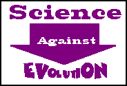

|
 |
Science Against Evolution
|
Science Against Evolution is a California Public Benefit Corporation whose objective is to make the general public aware that the theory of evolution is not consistent with physical evidence and is no longer a respectable theory describing the origin of life.
| Why Science is Against Evolution | ||||
|---|---|---|---|---|
| Swap Sheet Ads | Fourth Friday Free Films | Disclosure | Web Site of the Month | Topical Index |
This web site, which is updated after the fourth Friday of every month, tells you about
| Our Activites | Our Organization |
|
|---|
Most of all, it tells why science is against evolution.
If you have any questions or comments, we encourage you to send mail to Do-While Jones who maintains this no frills web site.
The theory of evolution depends upon three conditions.
Let's look at each of these conditions, one at a time.
According to the theory of evolution, at some time in the distant past there was no life in the universe -- just elements and chemical compounds. Somehow, these chemicals had to combine to form Frankencell, which came to life somehow. (Presumably, a lightening bolt and a deformed assistant were involved.)
The February 1988 issue of EARTH magazine is a special issue on Origins. The cover promises an article that will tell us "How Life Really Began". The article itself, however, says that scientists just don't know. Even Stanley Miller, whose experiments are cited in most biology text books, states in that article that the origin of life is still unknown.
There are only two documented cases of inanimate objects coming to life.
Under normal circumstances, creatures give birth to the same kind of creatures. One does not expect a lizard to hatch from a chicken egg. Chickens have baby chickens. It is established scientific fact that like begets like.
On rare instances, the DNA in an embryo is damaged, resulting in a mutant child that differs in some respect from its parent. Only a few mutations have been scientifically observed that are arguably beneficial. It is well known that mutations produce inferior offspring. For the theory of evolution to be true, there must be a fantastic number of beneficial mutations to produce new kinds of offspring when are better suited for survival, and therefore are favored by natural selection.
It is claimed that the reptile-to-mammal evolution is well documented. But for reptiles to evolve into mammals
Sadly, it is well known that living things can die. This has often been observed. It has NOT been scientifically demonstrated that a dead thing can come to life. Despite this, evolutionists believe that given enough time, something dead will come to life by some method or another.
It has never been observed in any laboratory that mutations can cause one species to turn into another. Despite this, evolutionists believe that given enough time, some critters will eventually evolve into other critters.
Evolutionists claim that although we have not actually observed these things happening, that does not mean that they are impossible. They say it simply means they are extremely improbable. It is extremely improbably that you can toss a coin and have it come up heads 100 times in a row. But if you toss coins long enough, eventually it will happen. Evolutionists think the world has been around long enough for all these highly improbable things to happen.
If we observe present processes, and make the assumption that they have have been going on at the same rate since they started, we generally come to the conclusion that the Earth could not be billions of years old. Some of the processes that have been studied that give young ages for the Earth are:
The old ages for the Earth come primarily from the ages of rocks, which are dated by the presumed ages of the fossils in them. Radioactive measurements of rocks are based on assumptions that were chosen to make the radioactive measurements agree with the presumed ages of the fossils.
The eruption of Mount St. Helens produced many feet of stratified rocks which look millions of years old, but were produced in days or hours. Radioactive measurements of these rocks show them to be millions of years old, too. But we know they were formed in 1980 because scientists saw them formed.
The theory of evolution is not believed because of scientific evidence. It is believed DESPITE scientific evidence. Science is against the theory of evolution.
285,123
| Quick links to | |||
|---|---|---|---|
| Science Against Evolution Home page |
Back issues of Disclosure (our newsletter) |
Web Site of the Month |
Topical Index |